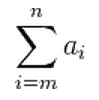

Express a sigma with jQuery and BEM
Write inputs of the following like this |
 |
| n | |
| i | |
| m | |
| ai |
Then entered value is reflected
<div class="sigma" data-role="sigma"> <span class="sigma__upper-bound">6</span> <span class="sigma__map">Math.pow(i, 2)</span> <span class="sigma__index">i</span> <span class="sigma__lower-bound">3</span> </div>
<div id="target" class="sigma">
<span class="sigma__upper-bound">6</span>
<span class="sigma__map">Math.pow(i, 2)</span>
<span class="sigma__index">i</span>
<span class="sigma__lower-bound">3</span>
</div>
script>
$('#target').sigma();
/script>